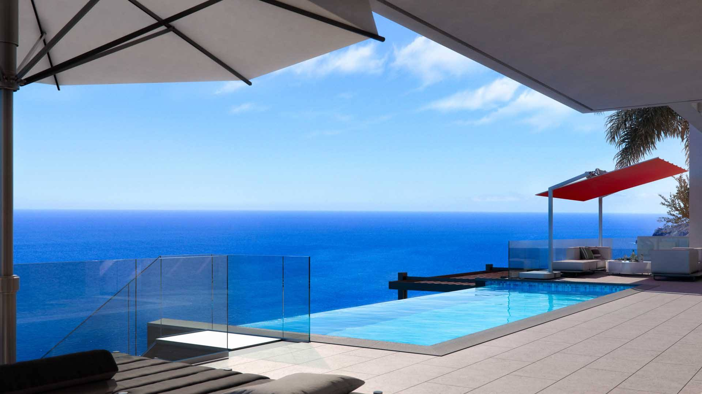
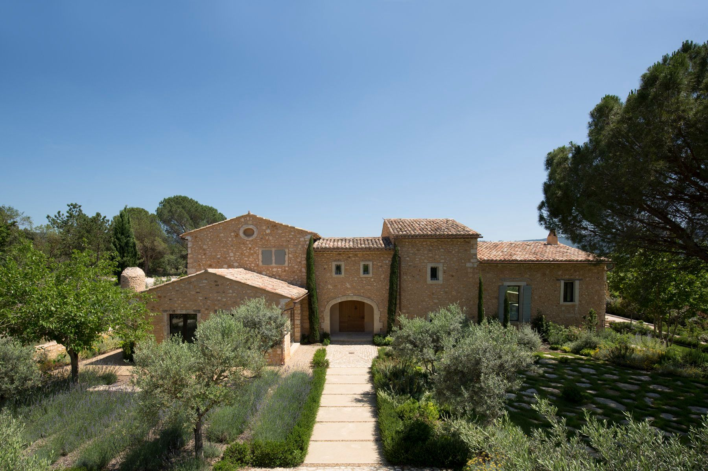
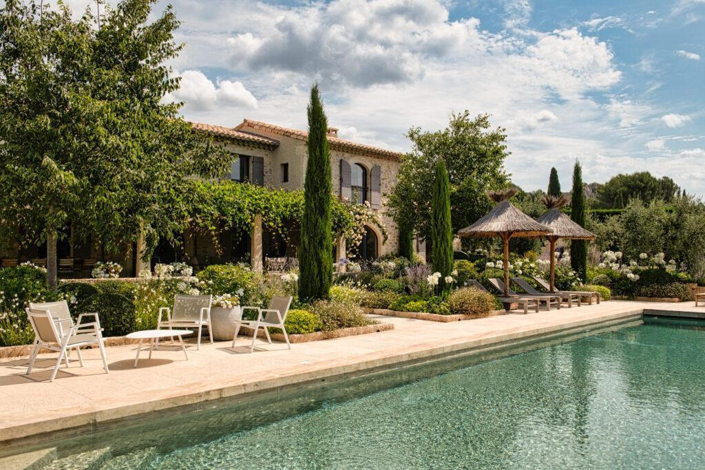

Portfolio
Nos biens en gestion
Un aperçu des maisons, villas, mas et bastides que nous accompagnons au quotidien à travers la Provence. Chaque bien bénéficie du même niveau d'exigence.




Chargement des biens…
Et si le prochain bien, c'était le vôtre ?
Votre villa mérite de rejoindre ce portfolio
Rejoignez les propriétaires qui nous font confiance pour valoriser et gérer leur bien en toute sérénité.